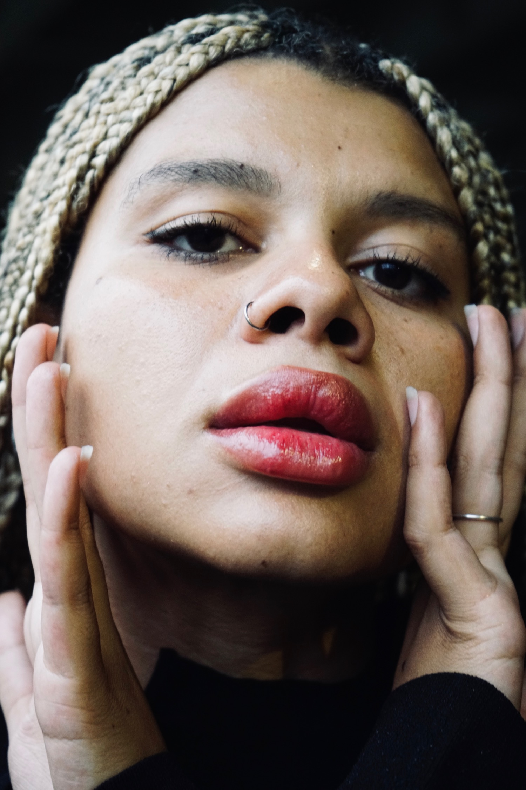
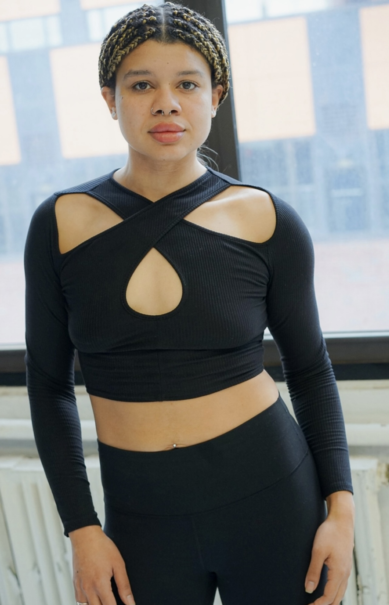
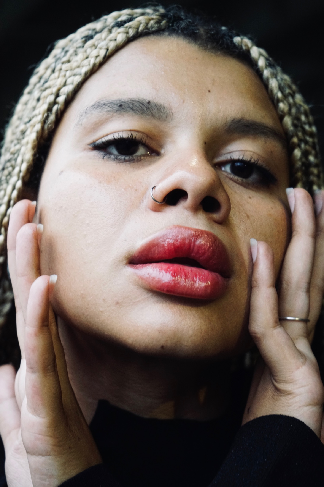
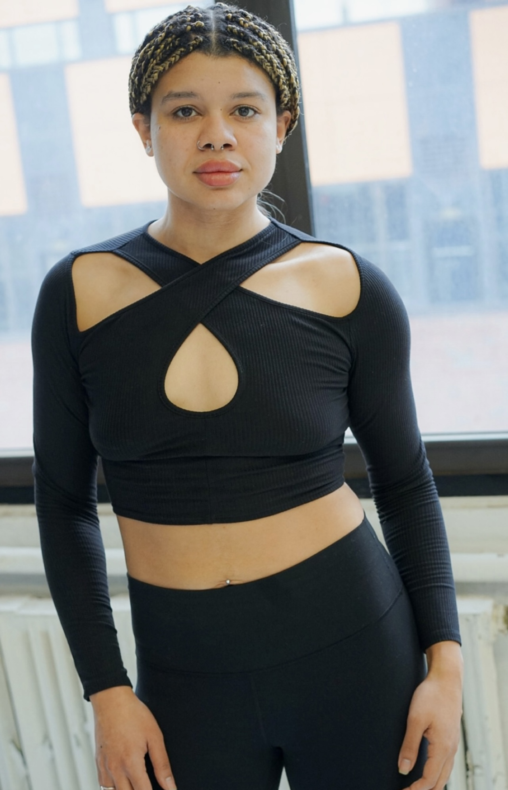

Dominique Clark
Software Engineer


Hi, I'm Dominique.
A Software Engineer.
I'm an aspiring software engineer with a background in neuroscience and a passion for full stack development. Currently based in New York City. Welcome to my portfolio, take a look around!
Background
For the majority of my life, I've lived in the Metro Detroit area of Michigan. I recently graduated from the University of Michigan, where I was pre-med and obtained a Bachelor of Science in biopsychology, cognition, and neuroscience. By the time I had graduated, I had completely lost my desire to go to medical school. I decided to move to New York City to find my passion and pursue new endeavors.
Why Software Engineering
I had always been interested in tech and learning how to code, but for the longest time I was discouraged when it came to pursuing a career in this field because I had devoted my life to medicene. After deciding against going to medical school, I did some research about different jobs in tech and came across software engineering.
I am hard working, driven, and highly analytical. I am motivated by complexity and challenging work, and I am very curious and always eager to learn new things. I am very creative and enjoy building things from the ground up, and problem-solving has always been one of my strengths. I am extremely passionate about my work, continuously improving myself, and growing my capabilities. This is why software engineering is the perfect field for me.
Hobbies and Interests
Outside of coding, the majority of my free time is spent exercising or modeling. I'm very inetersted in athletics, as I was a D1 rower for some time in univeristy. I really enjoy lifting weights, you can find me at the gym every day after work. I'm also very ineterested in fashion and I have been modeling since I moved to New York. I've walked the runway quite a few times, but I prefer photoshoots and editorial work.
Education
General Assembly - 2023
Software Engineering
University of Michigan - 2021
Bachelor of Science in Biopsychology, Cognition, and Neuroscience
Experience
Freelance Model - 2022
Walked in over 20 runway shows for multiple designers inluding Puma
Participated in various photoshoots for testing and also promotional and fashion modeling

 



Project 1: Portfolio Site
The project required that a portfolio site was built using HTML, CSS, JavaScript, and jQuery. The site is hosted on Netlify and commits to Github daily. The project includes pages for home, bio, resume, and projects sections, and also includes links to my social platforms. The site includes three points of interaction for the user that were created using jQuery. Responsive design was implemeneted, the site is functional on desktop, tablet, and mobile browsers.
Link to project 1Project 2: Some Project
This is a paragrah describing theproject. This is a paragrah describing the project. This is a paragrah describing the project. This is a paragrah describing the project. This is a paragrah describing the project. This is a paragrah describing the project.
Link to project 2Project 3: Some Project
This is a paragrah describing the project. This is a paragrah describing the project. This is a paragrah describing the project. This is a paragrah describing the project. This is a paragrah describing the project. This is a paragrah describing the project.
Link to project 3Project 4: Some Project
This is a paragrah describing the project. This is a paragrah describing the project. This is a paragrah describing the project. This is a paragrah describing the project. This is a paragrah describing the project. This is a paragrah describing the project.
Link to project 4